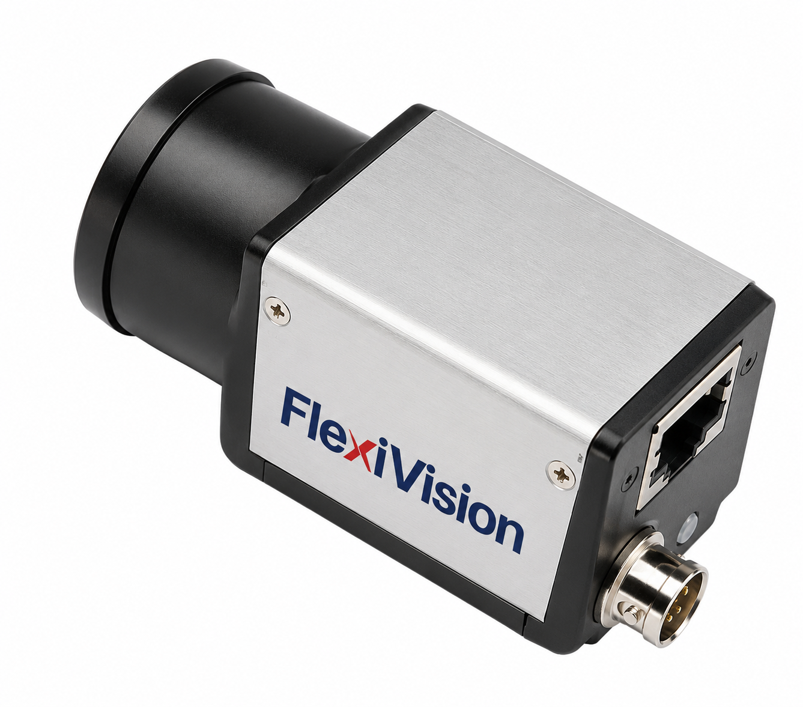
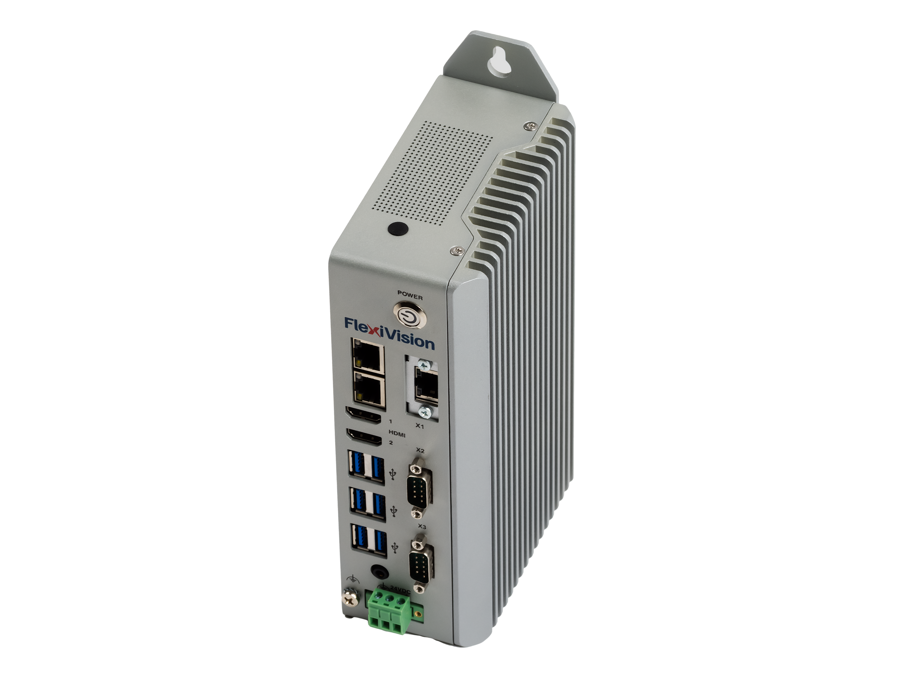

Especificaciones detalladas FlexiVision One#
Esta sección proporciona las especificaciones técnicas completas del sistema FlexiVision One, incluidos los detalles de la cámara industrial, el VisionController, la rejilla de calibración, los protocolos de comunicación y las configuraciones de hardware.
Cámara#
{kind=link}

El sistema FlexiVision One utiliza cámaras de alta resolución con una interfaz Gigabit Ethernet para garantizar una rápida adquisición de imágenes y un reconocimiento preciso de los componentes.
Especificaciones eléctricas#
Características |
Especificaciones |
|---|---|
Modelo |
CAM-CIC-5000-20G-1 |
Píxeles efectivos |
5 MP 12448 × 2048 |
SNR |
>38 dB |
Rango dinámico |
70 dB |
GPIO |
Conector Hirose de 6 patillas: 1 entrada optoaislada, 1 salida optoaislada, 1 I/O configurable sin aislamiento óptico |
Formato de imagen |
Mono8 / 10 / 10Packed |
Binning |
Support |
Gain |
X1 ~ X32 |
Gamma |
De 0 a 4, soporte LUT |
Tiempo de exposición |
34.23 μS ~ 1S |
Modo Trigger |
Software / Hardware / Free run |
Búfer de imagen |
256 MB |
Ajustes de usuario |
Support two sets of user-defined configuration |
Alimentación |
PoE / DC mediante conector Hirose, con tensión a 12 V o 24 V |
Consumo energético |
12V ≈ 3.2 W |
Montura del objetivo |
C-mount |
Temperatura operativa |
-30°C ~ +50°C |
Temperatura de almacenamiento |
-30°C ~ +80°C |
Certificaciones |
CE, UL, FCC, RoHS |
Resolución |
2448 x 2048 |
Pixel Size |
3.45 × 3.45 μm |
Sensor |
IMX264 CMOS Global Shutter |
Tamaño del sensor |
2/3” |
Frame Rate |
24 fps |
Bit Depth |
12 bit |
Interfaz |
GigE, POE |
Conector GPIO (Hirose 6 patillas)#

Vista trasera de la cámara con conectores#
Pin |
Señal |
Descripción |
|---|---|---|
1 |
Power |
Entrada de alimentación DC 12V o 24V |
2 |
Line1 |
Entrada optoaislada |
3 |
Line2 |
GPIO 1I/O configurable sin optoaislamiento mediante software |
4 |
Line0 |
Salida optoaislada |
5 |
IO GND |
Masa optoaislada |
6 |
GND |
Masa |
Warning
Requisitos de red obligatorios
La interfaz Gigabit Ethernet es obligatoria y requiere una infraestructura de red 1switch Gigabit Ethernet compatible y cables Ethernet de categoría Cat6 o Cat7 como mínimo con blindaje S/STP.
El incumplimiento de este requisito interrumpe por completo el funcionamiento de la cámara. Compruebe que todos los componentes de la red (cables, Switches, puertos) son compatibles con el estándar GigE.
Métodos de alimentación#
Método |
Descripción |
Requisitos |
|---|---|---|
PoE |
Alimentación y datos a través de un único cable Ethernet. Consumo 3.2 W a 12 Vdc. |
Requiere PoE Injector o Switch PoE compatible 1IEEE 802.3af/at |
Cable Cámara externo suministrado en el kit |
Alimentación DC externa mediante conector Hirose 6-pin 112V o 24V. Incluido en el kit. |
Se necesita un cable Ethernet independiente sólo para datos |
Tip
¿Qué método elegir?
PoE: ideal para instalaciones limpias de un solo cable, pero requiere hardware de red específico
Fuente de alimentación externa: solución estándar más flexible, recomendada para la mayoría de las aplicaciones
Cable de alimentación#

Especificaciones del cable de alimentación de la cámara#
Parámetro |
Valor |
|---|---|
Descripción |
Cable I/O 10 metros, conector HRS6P |
Compatibilidad |
Cámaras de la serie CIC |
Longitud |
10 metros 133’ |
Conector 1P1 |
Push/Pull 6P RECP Shell SZ 7 Hembra |
Sección del conductor |
22 AWG |
Tipo de cable |
Apantallado, 3 pares trenzados, flexible |
Colores de los cables |
Pin 1: Marrón, Pin 2: Verde , Pin 3: Rosa, Pin 4: Amarillo, Pin 5: Gris, Pin 6: blanca |
Blindaje |
Blindaje en todos los conductores |
Conformidad |
UL/CSA y RoHS |
Especificaciones físicas y dimensiones#

Características |
Valor |
|---|---|
Anchura × Altura 1Cuerpo |
29 × 29 mm |
Profondidad 1Cuerpo |
42.0 mm |
Profondidad total 1incluido el conector trasero |
48.9 mm |
Proyección frontal 1Montaje de la lente |
12.60 mm |
Distancia central de los orificios de montaje laterales 1M2 |
20.0 × 23.7 mm |
Orificios de montaje frontales |
2× M2 profundidad 3 mm |
Orificios de montaje laterales |
4× M2 profundidad 3,5 mm + 3× M3 profundidad 3,5 mm |
Peso |
88 g |
Lente#

Objetivo 35 mm
Parámetro |
Aumento de referencia |
M.O.D. |
|---|---|---|
Tipo de lente |
CCTV Lens |
CCTV Lens |
Posición de enfoque |
Reference Magnification |
M.O.D. |
Aumento |
0.069 |
0.167 |
Longitud focal (mm) |
34.97 |
34.97 |
Número F (Fno) |
2.00 ~ 16.00 |
2.00 ~ 16.00 |
Apertura numérica (NA) |
- |
- |
Distancia de trabajo / objeto (mm) |
500.0 / 507.0 |
200.0 / 207.0 |
Distancia objeto-imagen (mm) |
555.75 |
259.16 |
Longitud mecánica del tubo (mm) |
36.30 ~ 38.20 |
36.30 ~ 38.20 |
Back focus lente (mm) |
14.75 |
18.16 |
Profundidad de campo (mm) |
35.476 |
6.336 |
Resolución @550nm (µm) |
- |
- |
Posición plano principal Ant./Post. (mm) |
37.60 / -22.61 |
37.60 / -22.61 |
Posición pupila Ent./Sal. (mm) |
25.22 / -41.78 |
25.22 / -41.78 |
Diámetro pupila Ent./Sal. (mm) |
17.03 / 26.36 |
17.03 / 26.36 |
Ángulo de campo 1° H × V |
13.69 × 10.34 |
12.62 × 9.76 |
Distorsión TV 1% |
-0.088 |
-0.142 |
Iluminación relativa 1% |
44.95 |
50.20 |
Peso (g) |
50 |
50 |
Montura Mount |
C-mount |
C-mount |
Círculo de imagen (mm) |
φ11 |
φ11 |
Cámara máxima compatible |
2/3” |
2/3” |
Objetivo 25 mm
Parámetro |
Aumento de referencia |
M.O.D. |
|---|---|---|
Tipo de lente |
CCTV Lens |
CCTV Lens |
Posición de enfoque |
Reference Magnification |
M.O.D. |
Aumento |
0.049 |
0.152 |
Longitud focal (mm) |
25.00 |
25.00 |
Número F (Fno) |
1.60 ~ 16.00 |
1.60 ~ 16.00 |
Apertura numérica (NA) |
- |
- |
Distancia de trabajo / objeto (mm) |
500.0 / 510.0 |
150.0 / 160.0 |
Distancia objeto-imagen (mm) |
553.34 |
205.92 |
Longitud mecánica del tubo (mm) |
34.60 ~ 38.50 |
34.60 ~ 38.50 |
Back focus lente (mm) |
13.75 |
16.33 |
Profundidad de campo @PCoC 0.04mm (mm) |
54.223 |
5.835 |
Resolución @550nm (µm) |
- |
- |
Posición plano principal Ant./Post. (mm) |
29.42 / -12.46 |
29.42 / -12.46 |
Posición pupila Ent./Sal. (mm) |
18.48 / -31.94 |
18.48 / -31.94 |
Diámetro pupila Ent./Sal. (mm) |
15.92 / 28.32 |
15.92 / 28.32 |
Ángulo de campo 1° H × V |
19.39 × 14.64 |
18.05 × 13.89 |
Distorsión TV 1% |
-0.041 |
-0.271 |
Iluminación relativa 1% |
49.78 |
53.52 |
Peso (g) |
50 |
50 |
Montura Mount |
C-mount |
C-mount |
Círculo de imagen (mm) |
φ11 |
φ11 |
Cámara máxima compatible |
2/3” |
2/3” |
Objetivo 16 mm
Parámetro |
Aumento de referencia |
M.O.D. |
|---|---|---|
Tipo de lente |
CCTV Lens |
CCTV Lens |
Posición de enfoque |
Reference Magnification |
M.O.D. |
Aumento |
0.031 |
0.095 |
Longitud focal (mm) |
16.16 |
16.16 |
Número F (Fno) |
1.60 ~ 16.00 |
1.60 ~ 16.00 |
Apertura numérica (NA) |
- |
- |
Distancia de trabajo / objeto (mm) |
500.0 / 507.0 |
150.0 / 157.0 |
Distancia objeto-imagen (mm) |
554.26 |
205.30 |
Longitud mecánica del tubo (mm) |
35.50 ~ 37.00 |
35.50 ~ 37.00 |
Back focus lente (mm) |
12.16 |
13.20 |
Profundidad de campo @PCoC 0.04mm (mm) |
131.893 |
14.387 |
Resolución @550nm (µm) |
- |
- |
Posición plano principal Ant./Post. (mm) |
28.44 / -4.50 |
28.44 / -4.50 |
Posición pupila Ent./Sal. (mm) |
18.85 / -28.07 |
18.85 / -28.07 |
Diámetro pupila Ent./Sal. (mm) |
10.18 / 25.02 |
10.18 / 25.02 |
Ángulo de campo 1° H × V |
30.37 × 22.92 |
29.62 × 22.39 |
Distorsión TV 1% |
-0.472 |
-0.674 |
Iluminación relativa 1% |
32.75 |
36.61 |
Peso (g) |
50 |
50 |
Montura (Mount) |
C-mount |
C-mount |
Círculo de imagen (mm) |
φ11 |
φ11 |
Cámara máxima compatible |
2/3” |
2/3” |
Objetivo 12 mm
Parámetro |
Aumento de referencia |
M.O.D. |
|---|---|---|
Tipo de lente |
CCTV Lens |
CCTV Lens |
Posición de enfoque |
Reference Magnification |
M.O.D. |
Aumento |
0.023 |
0.075 |
Longitud focal (mm) |
12.00 |
12.00 |
Número F (Fno) |
1.80 ~ 16.00 |
1.80 ~ 16.00 |
Apertura numérica (NA) |
- |
- |
Distancia de trabajo / objeto (mm) |
500.0 / 505.6 |
150.0 / 155.0 |
Distancia objeto-imagen (mm) |
559.55 |
209.55 |
Longitud mecánica del tubo (mm) |
39.20 ~ 40.10 |
39.20 ~ 40.10 |
Back focus lente (mm) |
12.23 |
12.84 |
Profundidad de campo @PCoC 0.04mm (mm) |
277.576 |
28.121 |
Resolución @550nm (µm) |
- |
- |
Posición plano principal Ant./Post. (mm) |
17.71 / -0.05 |
17.71 / -0.05 |
Posición pupila Ent./Sal. (mm) |
11.68 / -12.18 |
11.68 / -12.18 |
Diámetro pupila Ent./Sal. (mm) |
6.67 / 13.41 |
6.67 / 13.41 |
Ángulo de campo 1° H × V |
40.54 × 30.77 |
39.40 × 30.05 |
Distorsión TV 1% |
-0.983 |
-0.905 |
Iluminación relativa 1% |
40.64 |
42.64 |
Peso (g) |
60 |
60 |
Montura Mount |
C-mount |
C-mount |
Círculo de imagen (mm) |
φ11 |
φ11 |
Cámara máxima compatible |
2/3” |
2/3” |
VisionController#
{kind=link}

El sistema FlexiVision One funciona en un PC industrial (VisionController) que sirve como controlador principal para el software de visión. ARS suministra el VisionController ya preconfigurado y probado con el software FlexiVision One instalado.
Especificaciones eléctricas#
Características |
Especificaciones |
|---|---|
CPU |
Intel Core i3-1115G4 1.7 14.1 GHz |
Memoria (RAM) |
8G DDR4 3200 MHz |
Almacenamiento |
256G |
TPM |
TPM 2.0 |
Sistema operativo |
Win11 LTSC 2024 |
Botón de encendido |
Sí (panel frontal con indicador luminoso) |
Puertos Ethernet |
i3/i7: 3× Gb LAN |
Puertos USB |
6× USB 3.0 TypeA |
Salida vídeo |
2× HDMI |
Audio |
Line Out + MIC (Jack 2-in-1) |
Alimentación (V DC) |
12 ~ 32 V DC |
Temperatura operativa |
1°C ~ +50°C |
Temperatura de almacenamiento |
-20°C ~ +65°C |
Humedad |
<90% (sin condensación) |
Material de la carcasa |
Aleación de aluminio + acero |
Grado de protección |
IP20 |
Método de instalación |
Montaje en pared (DIN Rail opcional) |
Consumo energético |
25 W |
Dimensiones (L × A × P) |
59.8 × 200 × 119.5 mm |
Peso |
2 kg |
Certificaciones |
CE, UL |
Puertos de PC#

Ref. |
Conector |
Descripción |
|---|---|---|
A |
Botón de encendido |
Encendido y apagado del dispositivo |
B |
ETH 10/100/1000 Mbit – RJ45 (LAN 1) |
Puerto Ethernet Gigabit 1 |
C |
ETH 10/100/1000 Mbit – RJ45 (LAN 2) |
Puerto Ethernet Gigabit 2 |
D |
Puerto serie (RS232) COM1 |
Interfaz serie RS232 COM1 |
E |
Puerto serie (RS232) COM2 |
Interfaz serie RS232 COM2 |
F |
Conector de entrada de alimentación |
Entrada alimentación 12–32V DC (terminal block 3-pin) |
G |
Salida audio + MIC (Jack 3.5 mm) |
1× salida audio de línea + entrada micrófono (jack 3.5 mm) |
H |
6× USB-A |
Puertos USB (USB 3.0 TypeA para versiones i3/i7) |
I |
Puerto vídeo 2 |
B2B12/B2B14: HDMI 2 — B2B15/B2B16: MostrarPort |
L |
Puerto HDMI 1 |
Salida de vídeo HDMI 1 |
M |
ETH 10/100/1000 Mbit – RJ45 1LAN 3 |
Puerto Gigabit Ethernet 3 |
Especificaciones físicas#

Orificios tornillos |
M5 |
|---|---|
Características |
Valor |
Anchura (total con soportes) |
245.00 mm |
Anchura (cuerpo) |
227.00 mm |
Anchura panel conectores |
200.00 mm |
Altura (total con soportes) |
123.00 mm |
Altura cuerpo |
120.00 mm |
Profundidad |
61.10 mm |
Herramienta Láser para Calibración#
La Herramienta Láser es una solución de calibración avanzada que mejora la precisión con la que se guarda el punto de referencia del robot. La principal ventaja del láser es que no requiere contacto físico con la rejilla de calibración. Funcionando como un puntero de alta precisión, el láser permite al operador alinear el punto objetivo de forma visual y repetible en la cuadrícula, ofreciendo un grado de precisión mucho mayor que utilizando un punto físico. Esta precisión es esencial para el éxito de la calibración y complementa perfectamente la repetibilidad garantizada por la rejilla de calibración dedicada ARS.

Característica |
Herramienta Láser |
Herramienta de punta estándar |
|---|---|---|
Método de referencia |
Puntero visual sin contacto |
Punta mecánica/física de contacto |
Precisión de la referencia |
Máxima precisión; el operario alinea visualmente el punto con exactitud. |
Medio, subordinado a la visión del operador |
Facilidad de uso |
Simplifica el procedimiento de alineación visual. |
Requiere más cuidado en la colocación y evitar la inclinación. |
Ventaja clave |
Permite guardar el punto de referencia del robot con la mayor fidelidad posible, lo que es esencial para la precisión final del picking. |
Método básico, pero menos preciso que el láser. |

| POS. | DESCRIPCIÓN |
|---|---|
| 1 | TAPA DE CIERRE SUPERIOR |
| 2 | PORTAPILAS CR2032 3V BOTÓN |
| 3 | BRIDA DE ACOPLAMIENTO |
| 4 | ABRAZADERA |
| 5 | CUERPO DE LA HERRAMIENTA |
| 6 | PUNTERO LÁSER |
| 7 | AMORTIGUADOR DE MUELLE |
| 8 | SOPORTE DISTANCIADOR |
Important
El soporte para montar la Herramienta Láser en lugar de la herramienta del robot NO se suministra, ya que varía para cada robot y debe personalizarse.
Consejo
El uso de la Herramienta Láser en combinación con la Rejilla de Calibración Dedicada ARS es la metodología más robusta y precisa para instalar FlexiVision One
Rejilla de calibración#

Una calibración excelente es el requisito básico para la precisión del sistema FlexiVision One. Sólo una calibración de alta precisión garantiza que las coordenadas detectadas por la cámara (píxeles) se conviertan con exactitud en las coordenadas reales del robot (milímetros), garantizando así el éxito de la aplicación de picking.
Especificaciones de la rejilla#
Rejilla para FlexiBowl® 200

Rejilla para FlexiBowl® 350

Rejilla para FlexiBowl® 500

Rejilla para FlexiBowl® 650

Rejilla para FlexiBowl® 800
Rejilla para FlexiBowl® 1200

Para obtener información detallada sobre los procedimientos de calibración, consulte la sección Calibración de la cámara.
Resumen de conexiones#

Esquema completo de conexión del sistema FlexiVision One con robot y FlexiBowl®
De |
A |
Enlace |
|---|---|---|
Red eléctrica |
FlexiBowl® |
Alimentación 110/230 Vac |
Red eléctrica |
Robot |
Fuente de alimentación según las especificaciones del robot que posea |
Red eléctrica |
Camera |
Alimentación 24 Vdc |
Red eléctrica |
Iluminador 1 luz |
Alimentación 24 Vdc |
Red eléctrica |
Controlador de tolva |
Alimentación 110/230 Vac |
Controlador de tolva |
Tolva |
Alimentación y señal |
Robot |
Controlador de tolva |
I/O digitales |
VisionController |
Cámara |
Ethernet TCP |
VisionController |
FlexiBowl® |
Ethernet TCP |
VisionController |
Robot |
Ethernet TCP |
Para obtener diagramas de cableado detallados, consulte la sección Cableado y conexiones.
Componentes opcionales#
Componentes adicionales disponibles por separado: